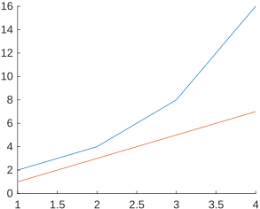
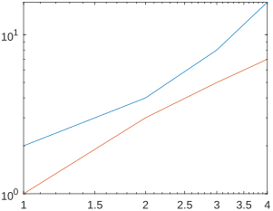

可能是figure和hold on的原因。
错误范例：
x = [1 2 3 4];
y = [2 4 8 16];
z = [1 3 5 7];
figure;
hold on
loglog(x, y);
loglog(x, z);
输出

正确范例：
注意hold on的位置：
x = [1 2 3 4];
y = [2 4 8 16];
z = [1 3 5 7];
figure;
loglog(x, y);
hold on
loglog(x, z);
输出

为什么？
hold on 会固定当前坐标轴属性，包括 XScale 和 YScale，所以要么先 loglog 再 hold on，要么就再重新设置 XScale 和 YScale。
hold on
loglog(x, y)
set(gca, 'XScale', 'log', 'YScale', 'log')